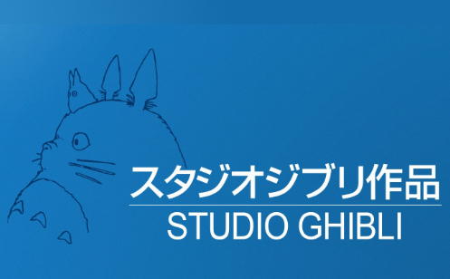
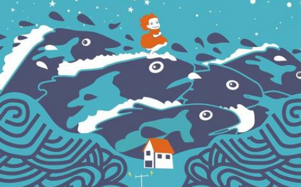

Voici la partie informations...
Un peu de musique pour vous laisser bercer ?
PERSONNAGES
COMPOSITEUR
Joe Hisaishi
Compositeur iconique des films de Miyazaki, la musique de Joe Hisaishi est bien souvent un prolongement de la magie des films.
RÉALISATEUR
Hayao Miyazaki
Cofondateur du Studio Ghibli, son succès est aujourd'hui international. Ses films transmettent valeurs, humanité, et permettent de s'évader le temps d'un instant.
STUDIO
Le Studio Ghibli

Studio d'animation japonais unique grâce à ses longs et courts métrages. Ces derniers portent sur des valeurs humaines et sont souvent appréciés pour leur authenticité.
SYNOPSIS
Synopsis

Un petit garçon et un poisson rouge à l'allure d'une fillette. Des aventures magiques, un rapport à la nature à sa simplicité, de l'amour : Ponyo sur la falaise est LE film à regarder en famille.